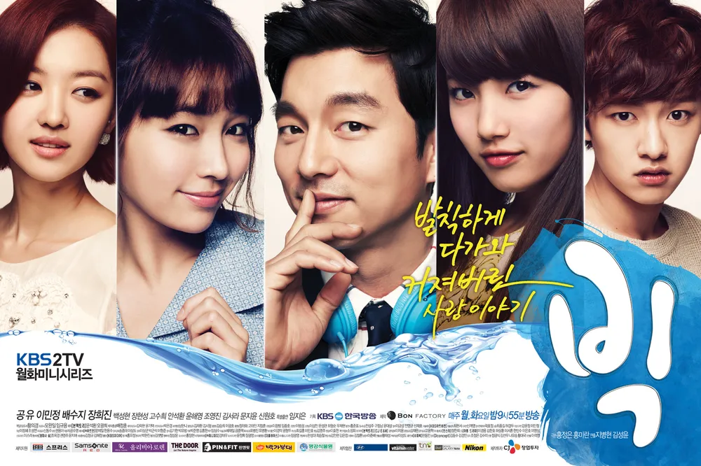
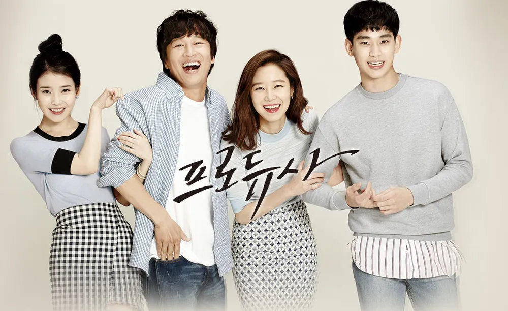
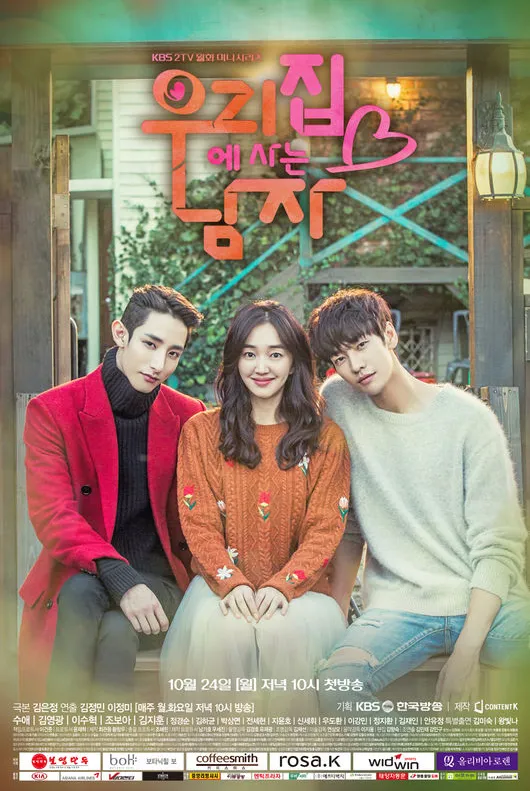
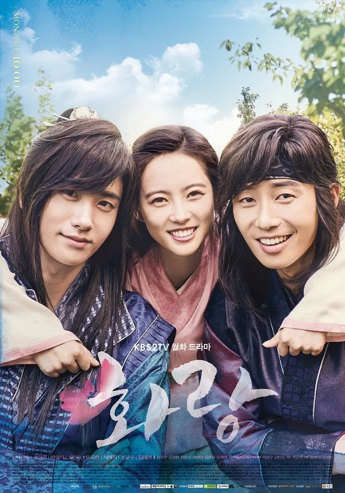
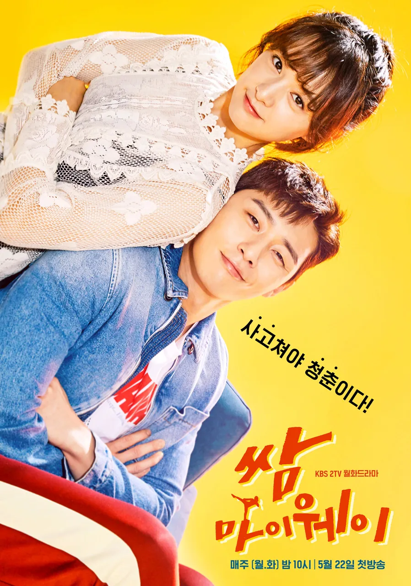

이야기를 따라 걷다
이어진 동행 : 35작품-

- 내 여자친구는 구미호
- 2010.08.11 ~ 2010.09.30
- 16부작 / 15세이상
- 우연히 만난 구미호와 사랑에 빠지는 한 남자의 이야기
-

- 빅
- 2012.06.04 ~ 2012.07.24
- 16부작 / 15세이상
- 18살, 질풍노도의 시기를 겪는 청소년이 어느 순간 30살 성인 남자가 되어 벌어지는 이야기를 그린 로맨스 판타지 드라마
-

- 삼총사
- 2014.08.17 ~ 2014.11.02
- 12부작 / 15세 이상
- 조선 인조시대를 배경으로 강원도 무인이자 가난한 집안의 양반 출신으로 한양에 올라와 무과에 도전하는 '박달향'이 자칭 "삼총사"인 '소현세자'와 그의 호위무사 '허승포', '안민서'를 만나, 조선과 명청 교체기의 혼란했던 중국을 오가며 펼치는 호쾌한 액션 로맨스 활극
-

- 킬미, 힐미
- 2015.01.07 ~ 2015.03.12
- 20부작 / 15세이상
- 다중인격장애를 소재로, 일곱 개의 인격을 가진 재벌 3세와 그의 비밀주치의가 된 레지던트 1년 차 여의사의 버라이어티한 로맨스를 그린 힐링 로맨틱코미디 드라마
-

- 프로듀사
- 2015.05.15 ~ 2015.06.20
- 12부작 / 15세이상
- 예능국 안에서 펼쳐지는 이야기
-

- 너를 사랑한 시간
- 2015.06.27 ~ 2015.08.16
- 16부작 / 15세이상
- 오랜 시간 동안 우정을 이어 온 두 남녀가 서른이 되며 겪게 되는 성장통을 그린 드라마
-

- 마담 앙트완
- 2016.01.22 ~ 2016.03.12
- 16부작 / 15세이상
- 임상심리전문가를 중심으로 사랑에 대한 이야기와 상처를 그려내는 로맨틱 코미디 드라마
-

- 시그널
- 2016.01.22 ~ 2016.03.12
- 16부작 / 15세이상
- "우리의 시간은 이어져있다." 과거로부터 걸려온 간절한 신호(무전)로 연결된 현재와 과거의 형사들이 오래된 미제 사건들을 다시 파헤친다!
-

- 우리집에 사는 남자
- 2016.10.24 ~ 2016.12.13
- 16부작 / 15세이상
- 아빠라고 우기는 어린 남자와 그 가족 간의 우여곡절을 그린 드라마
-

- 역도요정 김복주
- 2016.11.16 ~ 2017.01.11
- 16부작 / 15세이상
- 바벨만 들던 스물한 살 역도선수 김복주에게 닥친 폭풍 같은 첫사랑을 그린 감성 청춘 드라마
-

- 화랑
- 2016.12.19 ~ 2017.02.21
- 20부작 / 15세이상
- 1,500년 전 신라 수도 서라벌을 누비던 화랑들의 열정과 사랑, 성장을 그리는 청춘 드라마
-

- 쌈, 마이웨이
- 2017.05.22 ~ 2017.07.11
- 16부작 / 15세이상
- 세상이 보기엔 부족한 스펙 때문에 마이너 인생을 강요하는 현실 속에서도, 남들이 뭐라던 '마이웨이'를 가려는 마이너리그 청춘들의 골 때리는 성장로맨스를 담은 드라마